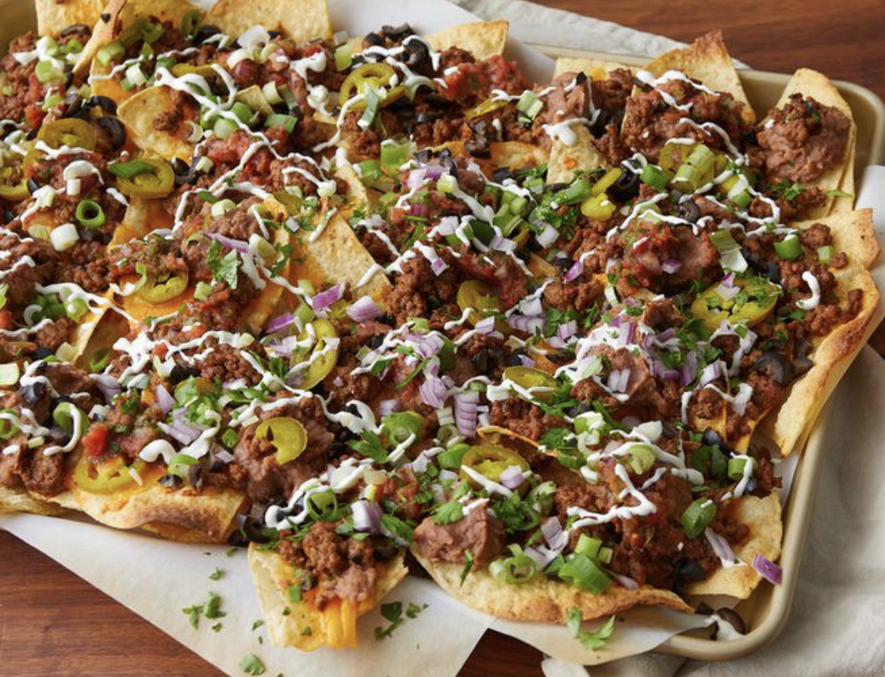

Super Nachos.

These homemade nachos are great for game day.
This recipe makes a huge meal-sized tray of nachos loaded with taco-seasoned ground beef, refried beans, salsa, jalapeños, and cheese.
Ingredients
- aluminum foil
- 1 pound ground beef
- ¾ cup water
- 1 (1.25 ounce) package taco seasoning mix
- 1 (18 ounce) package restaurant-style tortilla chips
- 1 cup shredded sharp Cheddar cheese, or more to taste
- 1 (15.5 ounce) can refried beans
- 1 (10 ounce) can pitted black olives, drained and chopped
- 1 cup salsa
- 1 cup sour cream, or more to taste
- 4 green onions, diced
- 1 (4 ounce) can sliced jalapeno peppers, drained
Directions
-
Step 1
Preheat the oven broiler. Set the oven rack about 6 inches from the heat source. Line a baking sheet with aluminum foil.
-
Step 2
Gather all ingredients.
-
Step 3
Cook and stir ground beef in a skillet over medium heat until meat is crumbly and no longer pink, 5 to 10 minutes. Drain excess grease. Stir in water and taco seasoning mix; simmer until beef mixture has thickened, 8 to 10 minutes.
-
Step 4
Spread tortilla chips on the prepared baking sheet. Top with Cheddar cheese, then dot with refried beans and ground beef mixture.
-
Step 5
Broil in the preheated oven until cheese is melted, 3 to 5 minutes. Top nachos with olives, salsa, sour cream, green onions, and jalapeño peppers.
Home